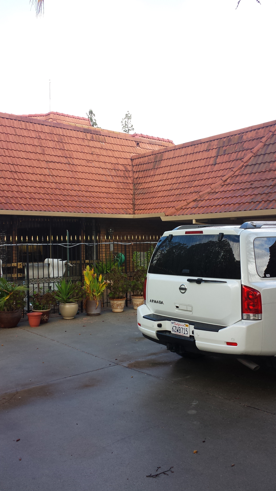
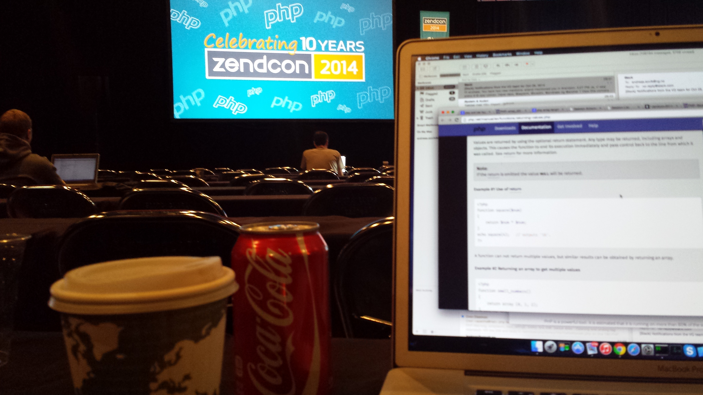
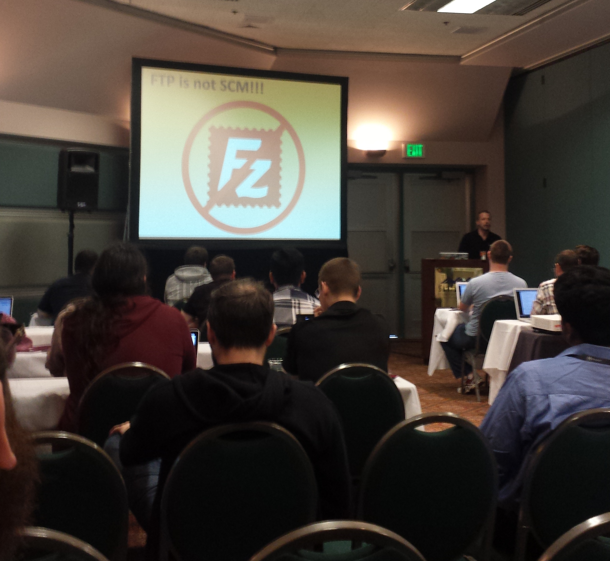
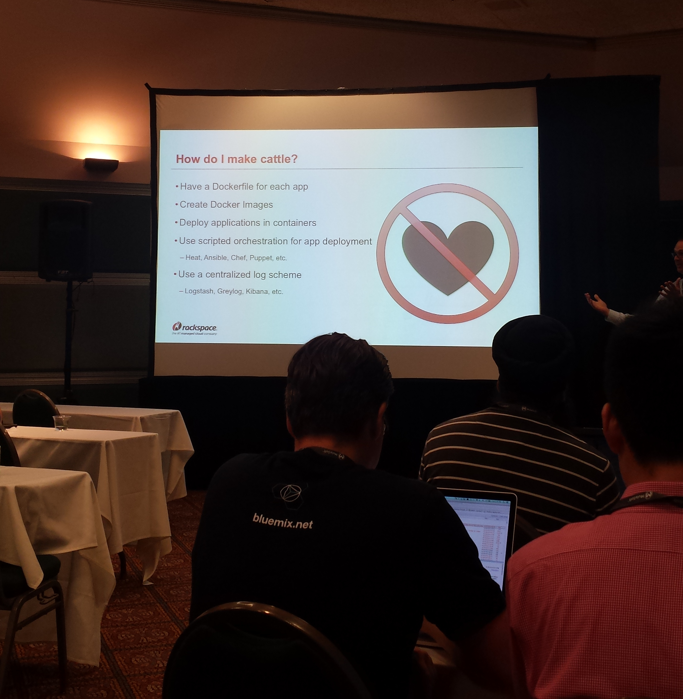
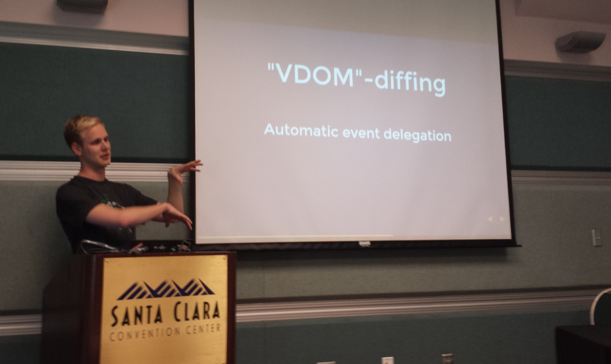
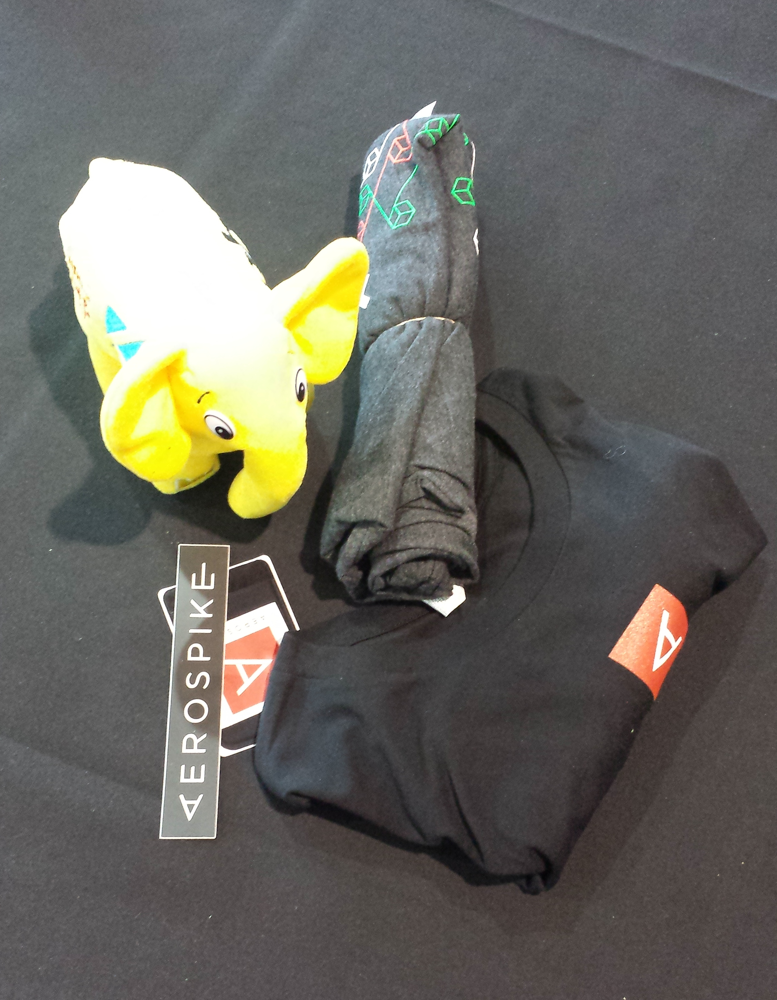
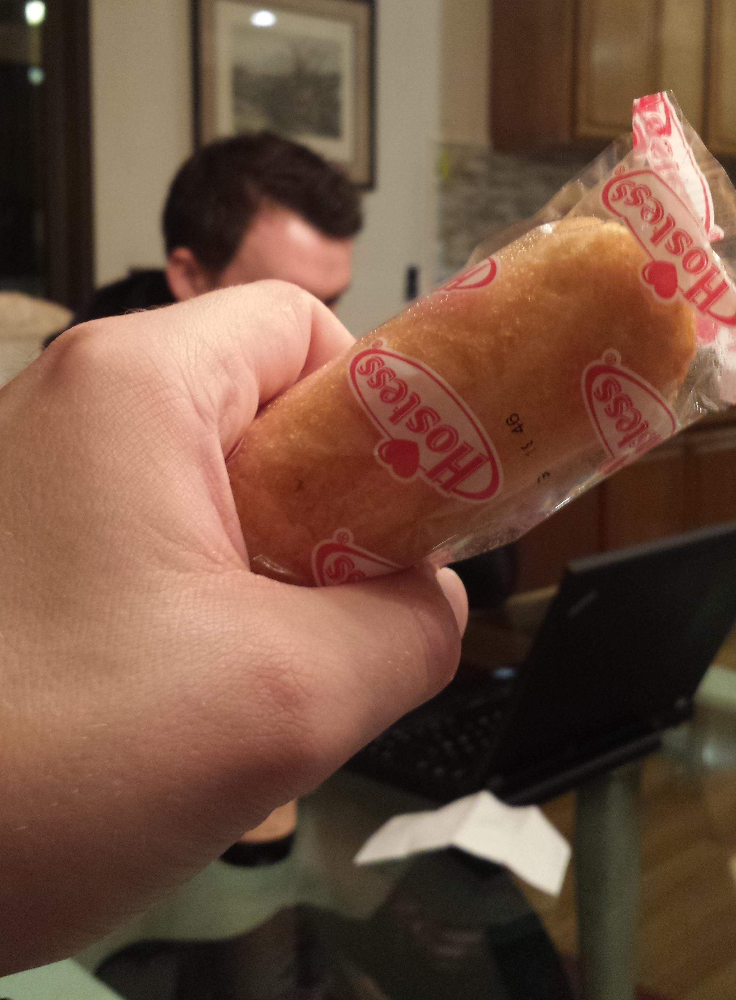
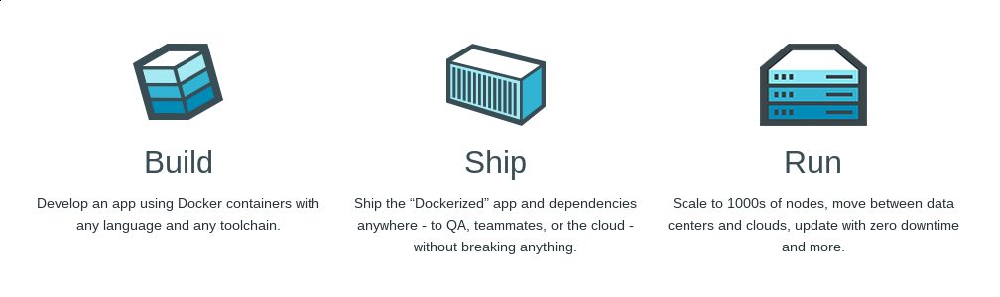

ZendCon 2014
California
VG Representin'
27-30. October
Who
- Andreas
- Erland
- Andrè
- Wadim
- + Espen H!
Tldr; gief pictures
We stayed in a huge (house|palace) in Los Gatos.

The palace + car
Front drive

Conference
You don't say
Make cattle
Reacting like a boss
Swag! Great success
Dat PHP exam

5.5 Certification.
Lounging in da house
Sommerkroppen 2025
Getting to SF
Beer
Holiday: do it!
Relevant information
We have "outgrown" a lot of these talks. The interesting talks touch what we have little practical experience with.
Docker

"DevOps" stuff, but relevant for EVERYBODY.
At ZendCon 2014: Adrian Otto
"Containers for multi-cloud apps"
Cattle or pets?
Current situation in VG
- We have to care about the actual servers where our apps run.
- PHP+Apache versions. Node versions. libcurl. OPS/DevOps control it.
- Often serveral apps share the same server/runtimes complicating "upgrades" further.
- The runtimes are decoupled from the application and often shared amongst applications.
- Lack of updates. Testing is awkward as environments are mutable. dev, stage, prod are all different on some level.
- Packages and libraries being updated on servers. Does it break our running app? We don't know until we try.
- We do not have an agreed way of reproducing the environments locally for dev.
We have pets
Docker
Allows us to run and test our applications with all its userland dependencies the same way; everywhere!
Ops:
Manage the "cloud" infastructure + moving the applications around and orchestrating resources (volumes/storage etc).
Developer:
Make sure the application works as expected, which can be done isolated from external variables.
We build an "image" containing our application and runtimes. For example newest Fedora + NodeJS. This is immutable.
After building it with our own selection of software and testing it we run it in a container on stage/production.
We know our delivery works (an immutable image). We can be confident that it will work in production too and not break unexpectedly because of the environment it runs in.
The nature of containers force us to think about how our app interconnects with other services because container linking and volumes must be explicitly defined.
Sales pitch
VG Ops is missing the infastructure to run and manage containers right now.
...But they are working on it!
What can we do?
Start reading about Docker and containers.
Get a basic understanding of how it works
Start thinking how we best can containerize our applications.
Applications are different. They depend on different services (that should also be containerized).
What else needs to be containerized before your own application container has all the links it needs?